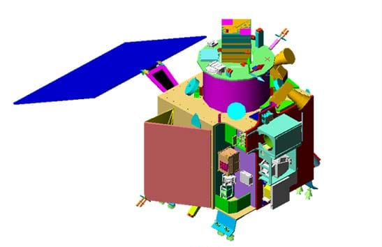
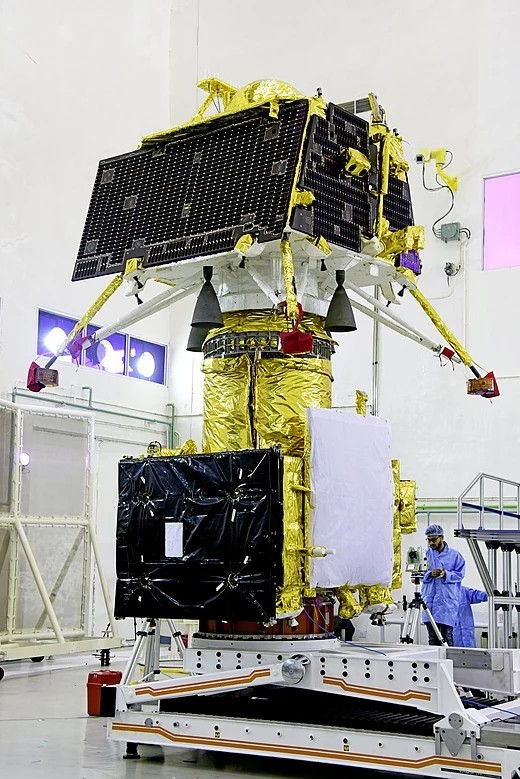
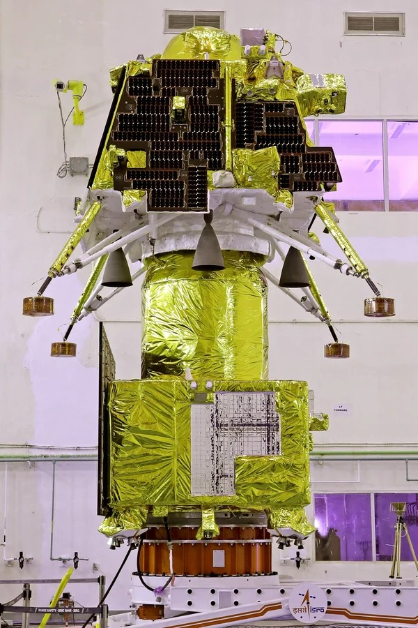
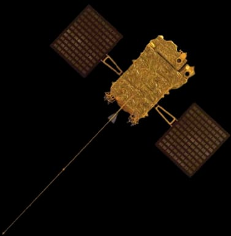
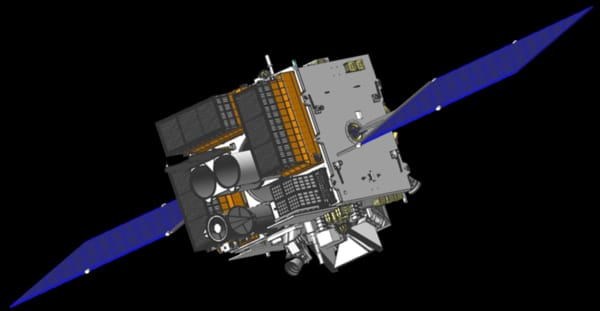
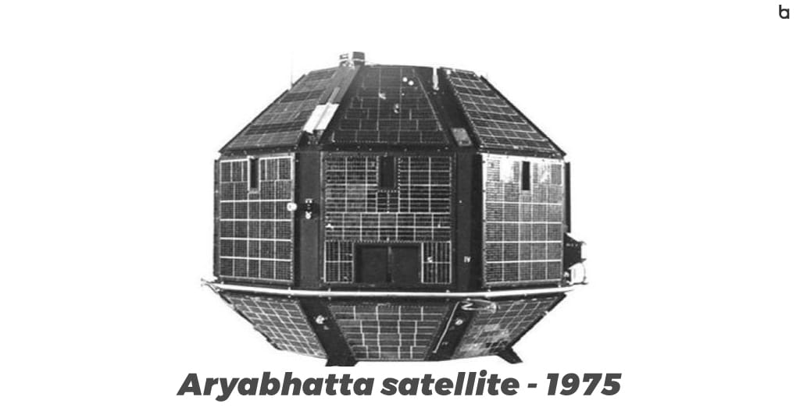
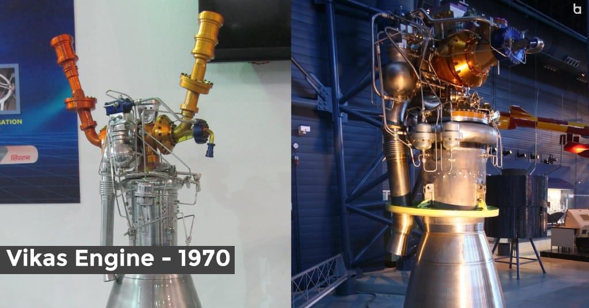
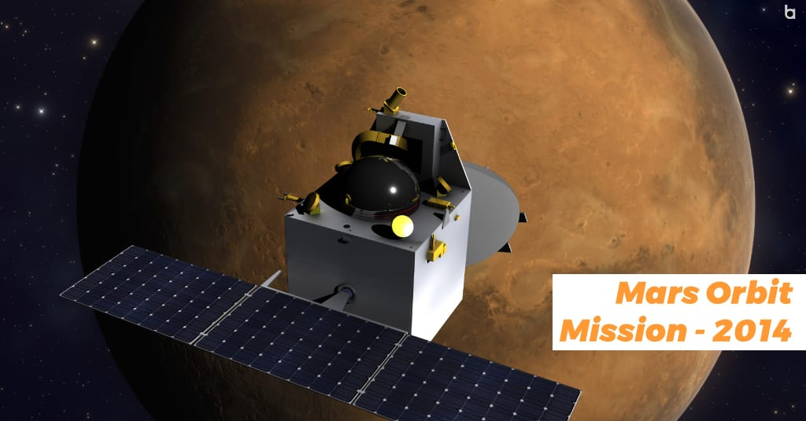
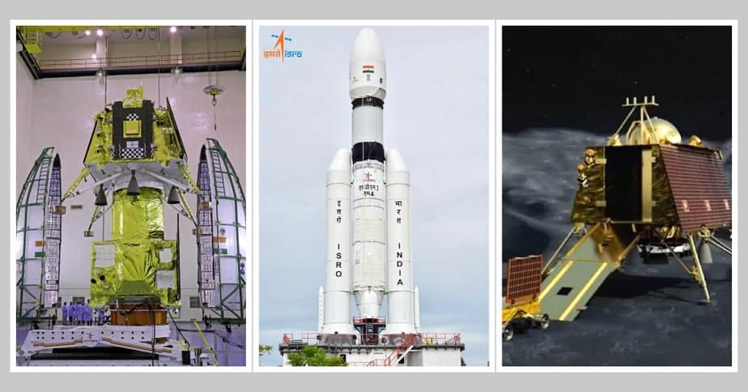

Launching India's first satellite, Aryabhata in 1975
Launching India's first indigenous satellite RS-1 in 1980
Developing various satellite launch vehicles, such as PSLV, GSLV, and GSLV Mk III.
Launching various satellites for communication, remote sensing, navigation, meteorology, astronomy, etc.
Sending missions to the Moon and Mars (Mars Orbiter Mission or Mangalyaan).
Future Plans
NASA-ISRO SAR (NISAR) Satellite-January 2024
SPADEX-Third quarter of 2024
Mangalyaan-2-2024
Gaganyaan-2024
Shukrayaan 1-2031
Get in touch
If you feel this website is lacking something please drop your suggestions here
Find us elsewhere
Communication Satellite
Supports telecommunication, television broadcasting, satellite news gathering, societal applications, weather forecasting, disaster warning and Search and Rescue operation services.
Earth Observation Satellite
The largest civilian remote sensing satellite constellation in the world - thematic series of satellites supporting multitude of applications in the areas of land and water resources; cartography; and ocean & atmosphere
Experimental Satellite
A host of small satellites mainly for the experimental purposes. These experiments include Remote Sensing, Atmospheric Studies, Payload Development, Orbit Controls, recovery technology etc..
Other Satellites
It includes Small satellite , Student Satellite , Navigation Satellites , Scientific Spacecraft

Chandrayan 1
Chandrayaan 1 as India's first lunar probe. It was launched by the Indian Space Research Organisation on 22 October 2008, and was operated until August 2009. The mission included a lunar orbiter and an impactor. The mission was a major boost to India's space program, as India researched and developed its own technology in order to explore the Moon. The vehicle was successfully inserted into lunar orbit on 8 November 2008.

Chandrayan 2
Chandrayaan-2 was launched from the second launch pad at Satish Dhawan Space Centre on 22 July 2019 at 2.43 PM IST (09:13 UTC) to the Moon by a LVM3 (previously known as GSLV Mk III). The planned orbit has a perigee of 169.7 km and an apogee of 45475 km. It consists of a lunar orbiter, lander and rover, all developed in India. The main scientific objective is to map the location and abundance of lunar water.

Chandrayan 3
Chandrayaan-3 was launched from the Satish Dhawan Space Centre, Sriharikota on 14 July 2023 at 14:35 IST (UTC +5:30) by LVM3 M4. The main scientific objective is to map the location and abundance of lunar water. It is without orbiter. Chandrayaan-2 orbiter helped Chandrayaan-3. The Chandrayaan-3 successfully landed on moon on 23/08/2023 at 18:05 (6:05PM).

Aditya L1
Aditya-L1 is the first Indian observatory class mission to study the solar corona using a solar coronagraph and also chromosphere using near UV instrument. X-ray spectroscopic instruments will provide flare spectra while the in-situ payload observes the solar events during their passage from Sun to Earth.

ASTROSAT
ASTROSAT is the first dedicated Indian Astronomy satellite mission launched by ISRO on 28 September 2015, which enabled multi-wavelength observations of the celestial bodies and cosmic sources in X-ray and UV spectral bands simultaneously. It was in the Sun's orbit for 7 years. The scientific payloads cover the Visible (3500–6000 Å...), UV (1300–op Å...), soft and hard X-ray regimes (0.5–8 keV; 3–80 keV). The uniqueness of ASTROSAT lies in its wide spectral coverage extending over visible, UV, soft and hard X-ray regions.
UPCOMING PLANS
NASA-ISRO SAR(NISAR) Satellite
The NISAR satellite will deepen understanding of climate change, deforestation, glacier melt, volcanoes, earthquakes, and more.
SPADEX
A short form of space docking experiment, the Spadex project of ISRO is a twin spacecraft mission to mature technologies related to orbital rendezvous, docking, formation flying, with scope of applications in human spaceflight, in-space satellite servicing and other proximity operations. The mission cost is projected at Rs 124.47 crore. The launch is scheduled for the third quarter of 2024.
Mangalyaan-2
The second mission to Mars, Mangalyaan 2, also called the Mars Orbiter Mission 2, will be an inter-planetary mission by ISRO with a planned launch date in 2024. The spacecraft will carry a hyperspectral camera, a high resolution panchromatic camera and a radar to understand early Martian crust, recent basalts and boulder falls.
Gaganyaan
Gaganyaan project envisages demonstration of human spaceflight capability by launching crew of 3 members to an orbit of 400 km for a 3 days mission and bring them back safely to earth, by landing in Indian sea waters. Gaganyaan 3 would be India's first human space mission. This mission is scheduled for a 2024 launch.
Shukrayaan 1
It is also called the Venus Mission.The Shukrayaan I mission will be an orbiter mission.Its scientific payloads currently include a high-resolution synthetic aperture radar and a ground-penetrating radar.The mission is expected to study Venus's geological and volcanic activity, emissions on the ground, wind speed, cloud cover, and other planetary characteristics from an elliptical orbit.
OUR NOTICABLE ACHIEVEMENTS
Aryabhatta satellite-1975
The Aryabhatta satellite, named after the ancient Indian mathematician, was launched into space. It played a significant role in advancing India's space program and conducting scientific experiments.Aryabhata was launched into space on April 19, 1997. It was named after the great Indian astronomer and was built entirely in India. This ground-breaking satellite enthralled the world.Aryabhata was sent into orbit by the powerful Kosmos-3M launch vehicle from Kapustin Yar, a well-known Soviet rocket launch complex in Astrakhan Oblast. It embarked on a journey to unravel the mysteries of our planet and beyond with precision and grace.Aryabhata weighed 794 pounds (360 kg) and was outfitted with innovative technology. Its aim is to probe deep into the Earth's ionosphere, meticulously analyzing the interesting neutrons and gamma rays emitted by our bright sun. Aryabhata was also programmed to discover the secrets of the universe through enthralling X-ray astronomy experiments.On the historic day of April 19, 1975, Aryabhata took flight, riding atop a Russian-made rocket within the Soviet Union's borders. Aryabhata exemplifies India's capability in space exploration.
Rohini Satellite 1-1980
RS-1 was a 35 kg experimental spin stabilized satellite designed with a power handling capability of 16W. It was successfully launched onboard SLV-3 from SHAR Centre on July 18, 1980 into an orbit of 305 x 919 km with an inclination of 44.7°. All the fourth stage parameters of SLV-3 were successfully telemetered to the ground stations by RS-1 during the launch phase. The satellite had an orbital life of 9 months. The satellite carried Digital sun sensor, Magnetometer and temperature sensors. The structure was made of Aluminium Alloy.
Vikas Engine-1970
Lastly on our list of the Top Achievements of ISRO is the Vikas Engine. The Vikas engine is a powerful and reliable liquid rocket engine developed by the Indian Space Research Organization (ISRO). It has been extensively used in various launch vehicles, including the Polar Satellite Launch Vehicle (PSLV) and the Geosynchronous Satellite Launch Vehicle (GSLV).The series of liquid-fueled rocket engines developed by ISRO scientists have redefined the possibilities for space exploration. A brilliant team at the Liquid Propulsion Systems Center, led by the extraordinary Nambi Narayanan, developed the Vikas engine in the 1970s.This marvel of Indian engineering has risen to tremendous heights by drawing inspiration from the licensed version of the Viking engine and combining it with an innovative chemical pressurization system.It also powers the PSLV's second stage, boosts the performance of the GSLV Mark I and II, and serves as the fearsome core stage of the GSLV Mark III. This remarkable engine has carried missions such as Chandrayan and Mangalyaan to the stars.On January 30, 2023, ISRO reached a watershed moment: the Vikas engine's initial throttling trial hot test was a success. Witness the engineering marvel's accuracy and refinement as ISRO achieved a historic 67% power reduction for a stunning 43 seconds.
Mars Orbit Mission-2014
SRO launched MOM in 2013, rightly named Mangalyaan, to expand the bounds of exploration by venturing into unknown territory, enabling humanity to unravel the secrets of the cosmos.The historic endeavor has caught the world's attention, focusing clearly on understanding Martian terrain, morphology, minerals, and atmosphere. MOM, blasted into space by the powerful PSLV-XL, set out on its voyage to Mars.Since it first arrived at Mars on September 24, 2014, MOM has been in orbit around the planet. Its strategic orientation lets it gather detailed photographs of a whole Martian hemisphere simultaneously, thanks to a highly elliptical orbit spanning 423 80,000 km.MOM carries a color camera, a thermal infrared sensor, an ultraviolet spectrometer, a mass spectrometer, and a methane sensor, among other instruments that allow scientists to examine the Martian exosphere and investigate the existence of methane.Notably, on October 19, 2014, MOM had the unusual opportunity to view Comet Siding Spring as it gently glided by Mars, approaching 132,000 miles from the planet.
Chandrayan 3-2023
On August 23, 2023, ISRO achieved a significant milestone with the successful launch of Chandrayaan-3. It was launched using LVM3, weighing 8,400 kilograms. This spacecraft is on course to touch down on the Moon's surface by September 7, 2023. Chandrayaan-3's primary mission objective is the soft landing of a rover on the lunar surface, facilitating a series of experiments aimed at comprehending both the Moon's surface and subsurface characteristics. The spacecraft has been outfitted with a laser altimeter, a spectrometer, and a magnetometer, among other instruments. Noteworthy features of Chandrayaan-3 include its three-part configuration, comprising a lander, a rover, and a propulsion module. The Vikram lander is poised to execute a gentle landing in the South Pole region of the Moon, while the subsequent deployment of the Pragyan rover will initiate an exploration phase lasting up to 14 days. Remarkably, this ambitious mission operates within a budget of approximately 615 crores, a testament to ISRO's efficient resource management and strategic allocation of funds.
Ancient Astronomy
India`s ancient Astronomers Aryabhatta (476-550 A.D), Varahamihira (505-587 A.D), Brahmagupta (598-668 A.D), Bhaskara-1 (600-680.A.D), and Bhaskara-2 (1114-1185 A.D) have been credited with postulating certain fundamental principles of Astronomy including the helio-centric concept of rotation of Earth around the Sun, prediction of lunar and solar eclipse, concept of gravitational force and mathematics of planetary motion.These principles are fundamental in nature and form an important step in the advancement of Astronomy and contribute to our understanding of the Modern Astronomy and the methods of Celestial Mechanics that are used in the Space Programme.
Modern Astronomy
It may surprise some of you to know that ISRO was actually formed way back in 1962. The Indian National Committee for Space Research, as it was then called, was formed under the leadership of Vikram Sarabhai and physicist Kalpathi Ramakrishna Ramanathan.The Nike-Apache rocket supplied by NASA, being brought to Thumba for assemblyAt the time they had no resources to speak of, a small pool of scientists, and barely any funding. In fact, for the first rocket they launched a year later, they were transporting the parts to be assembled by bicycle. And now, more than 50 years later, we're launching rockets to the Moon, Mars, and beyond. So here are some of the greatest milestones in ISRO's history.


 RS-1 was a 35 kg experimental spin stabilized satellite designed with a power handling capability of 16W. It was successfully launched onboard SLV-3 from SHAR Centre on July 18, 1980 into an orbit of 305 x 919 km with an inclination of 44.7°. All the fourth stage parameters of SLV-3 were successfully telemetered to the ground stations by RS-1 during the launch phase. The satellite had an orbital life of 9 months. The satellite carried Digital sun sensor, Magnetometer and temperature sensors. The structure was made of Aluminium Alloy.
RS-1 was a 35 kg experimental spin stabilized satellite designed with a power handling capability of 16W. It was successfully launched onboard SLV-3 from SHAR Centre on July 18, 1980 into an orbit of 305 x 919 km with an inclination of 44.7°. All the fourth stage parameters of SLV-3 were successfully telemetered to the ground stations by RS-1 during the launch phase. The satellite had an orbital life of 9 months. The satellite carried Digital sun sensor, Magnetometer and temperature sensors. The structure was made of Aluminium Alloy.